Level Editor: Cameras
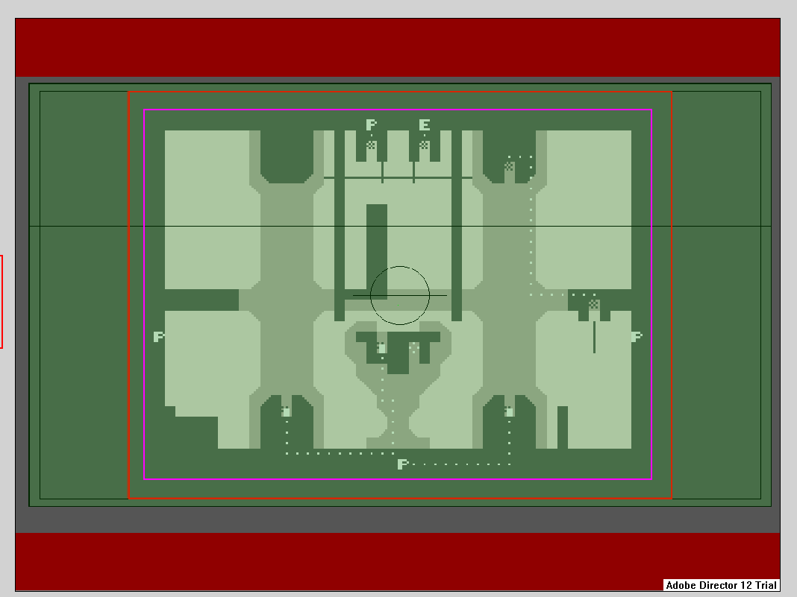
In the camera editor you can move, create and delete cameras, as well as influence the perspective rendering of these. The purple border marks the out of bounds of the map, while the red border marks the visible area of the camera. The black double border indicates the amount of camera slide/tilt area, and the green area is a representation of the perspective the camera has.
To Grab a camera press E. To drop it in place hit P. To create a new camera press N and to delete a camera pick it up and press D.
the following images are some examples of what can be done with these perspective shifts, as well as a default render for comparison
Controls
- E - pick up camera
- P - place/drop held camera
- N - create new camera
- D - delete held camera (after picking up)
- I, K - push/pull background corner from/to foreground corner
- J,L - rotate background corner around foreground corner (no visible change if corners overlap)
Warning: Attempting to render with no cameras will crash the editor.
Camera Angles
The camera can have its angle changed. This could be done to increase or lessen depth, it is great use to emphasise large structures.
To change the camera angle (green area), point the cursor towards a corner and then use the I J K L keys. it is of note that this does not follow the classical up/down left/right motion, but a up/down motion away from the rotation point of that corner while J and L rotate the point around the corner of the maximum tilt area.
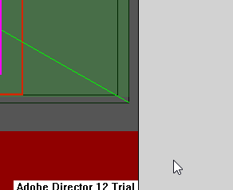
| Default Angle Render |
|---|
| 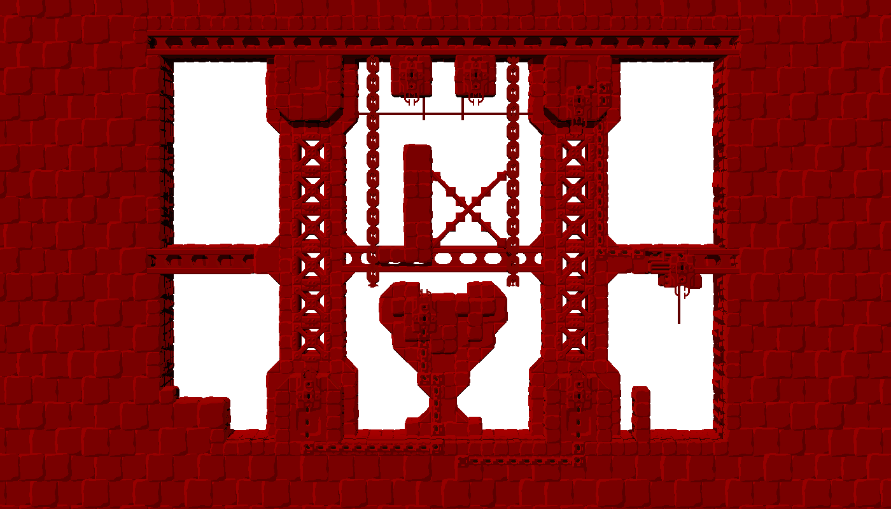 |
| Editor View | Render |
|---|---|
| 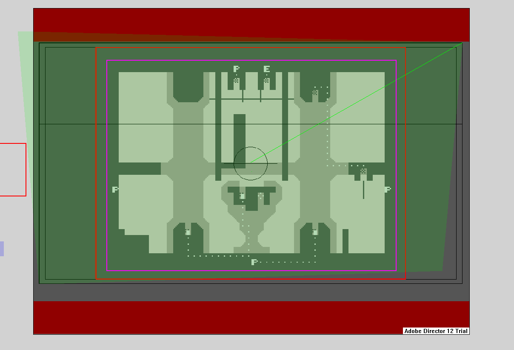 | 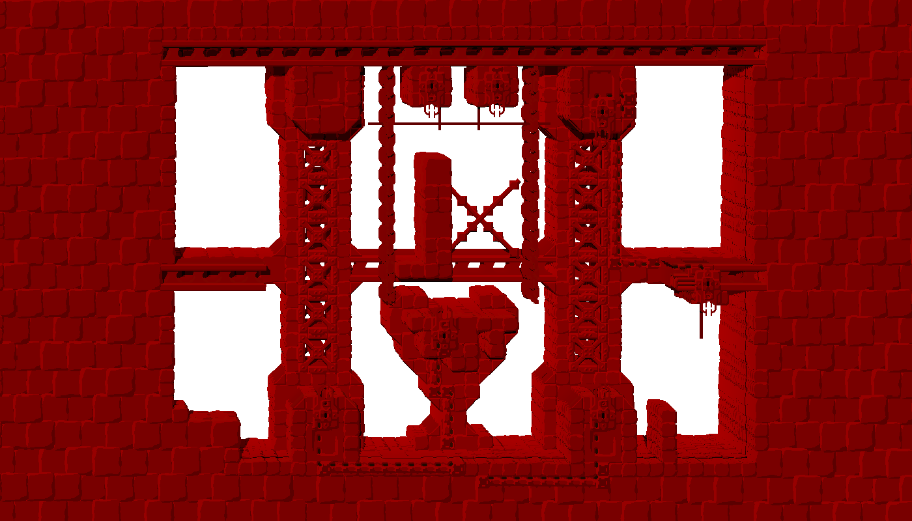 |
| 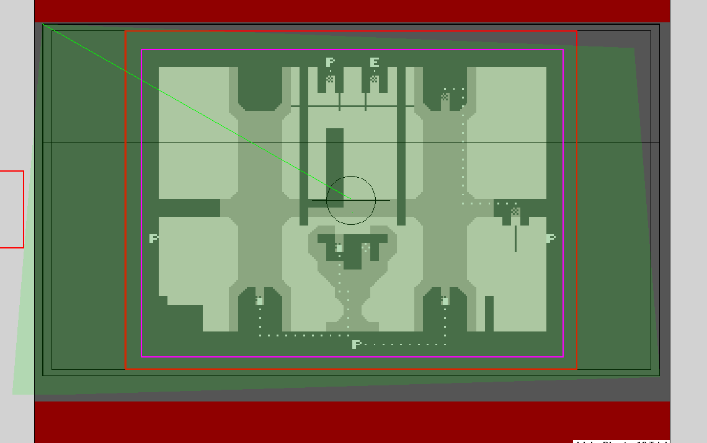 | 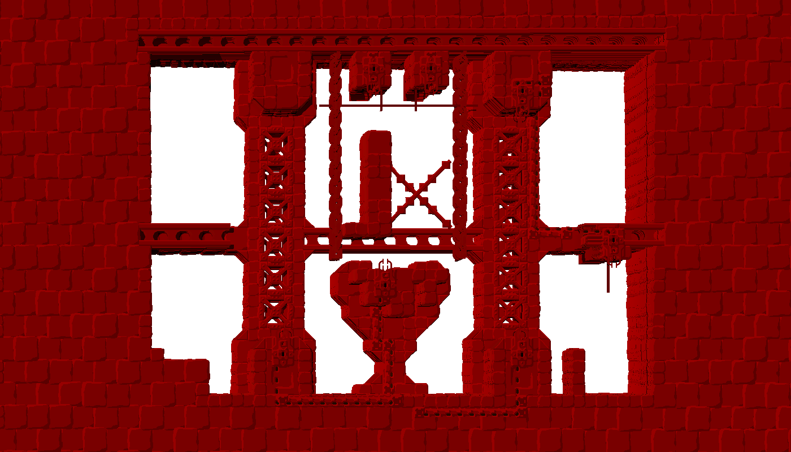 |
| 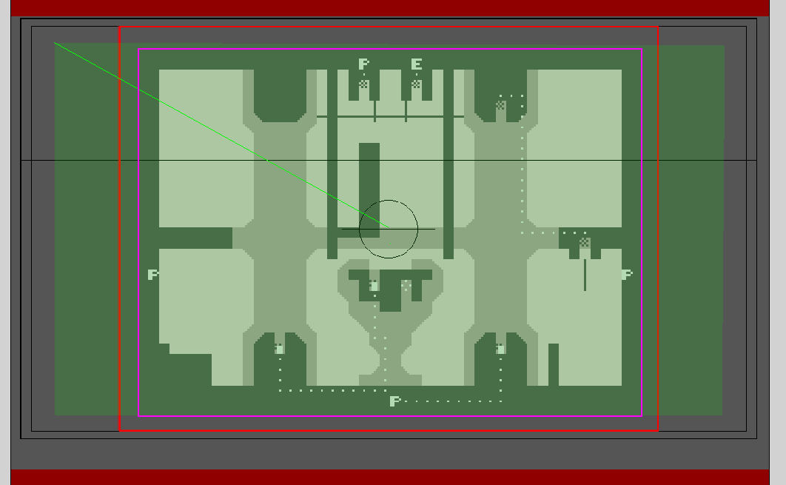 | 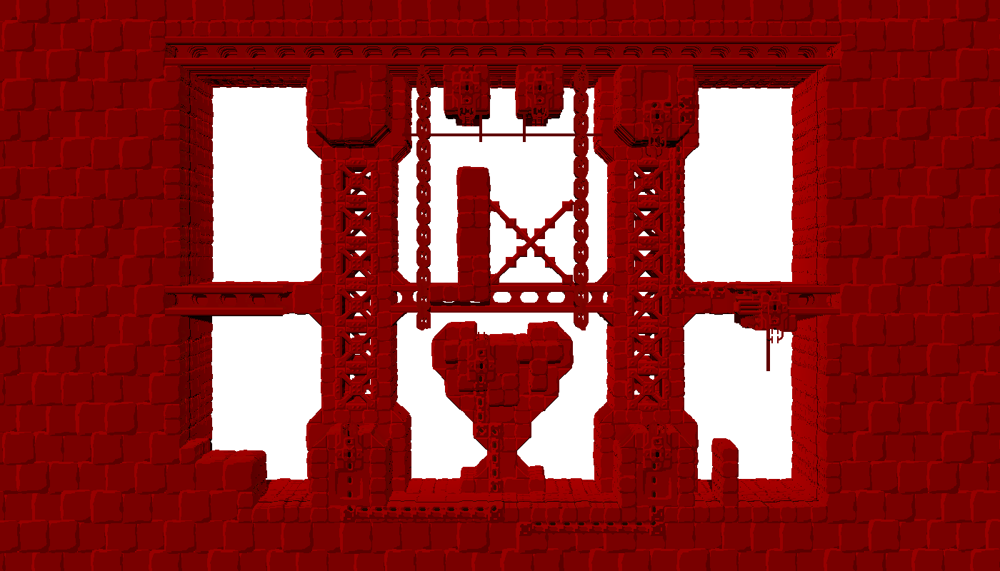 |
| 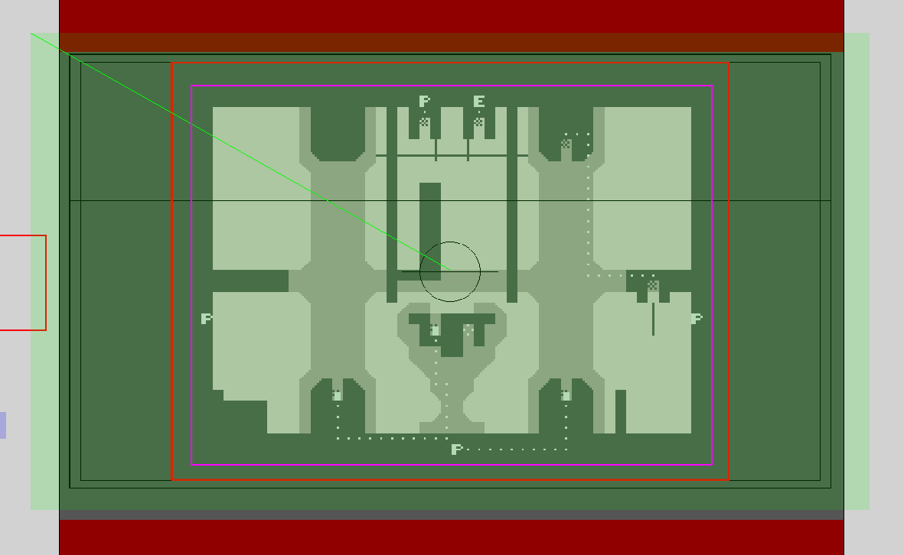 | 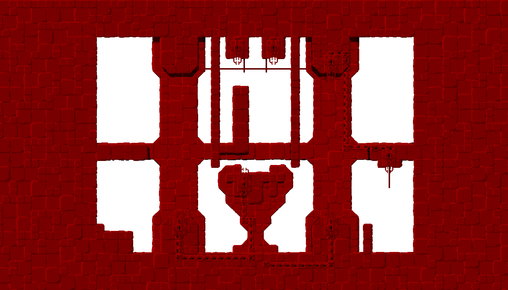 |